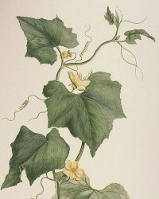
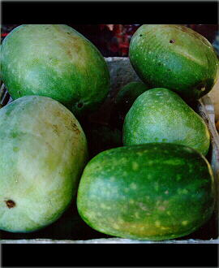

|
ECONOMICALLY
IMPORTANT PLANTS OF INDIA |
| Under-utilized Food and Fodder species and their wild relatives | Contributed by Ms.M.L Annapurna And Dr. Dhanapal, UAS, Bangalore |
Benincasa hispida

Correct
Name : Benincasa hispida (Thunb.)
Cogn.

Family : Cucurbitaceae
Synonyms : Benincasa cerifera, (Savi.);
Cucurbita
hispida;
Common Names :
English: Ash Gourd, Wax gourd,Beligu, Bligo , Blonchengh, Ash pumpkin,Tallow Gourd,The
white gourd and White gourd melon.
Hindi: Golkaddu,Kondha,Kumra,Petha,Raksa,
Tamil: Kalyanappushinikkay,pusanikkai ,pushini,Sambal.
Kannada:Budikumbala, Budagumbala kayi.
Sanskrit: Gramyakarkati, Karkotika ,Kushmandi, Kushpandaha, Pushpaphala,
Shikhivardhaka, Suphala, Timisha
Malayalam: Toong kwa,Tung kua
Telugu: Budidegummadi,Burdagumudu,Pendigummadikaya.
Bengali: Chal kumra.Guj: Bhuru
kohlu.
HABIT
& HABITAT
Benincasa is a monospecific genus belonging to the tribe Benincaseae Set., subfamily
Cucurbitoideae.. It is a climbing annual herb, it originated Java and Japan,
and it is distributed in south and south-east Asia, widely cultivated throughout
the tropical and subtropical regions of Asia, including south China. China;
Iraq; Malaya; Singapore; Turkey in the Cultivated Beds.
Cultivated fields and Plains,
Edges
of Forests & Forests,Hilly region,lower valleys,none,on hedges,Plains,Sub
Tropical Forests,Tropical Forests,Wild,
BioticZone: none,Subtropics,Tropics,
Availability
:
Misc: Khleihriat to Sonapur,none,
Country: India,Japan,Java,
Zone: Central,none,North East,South,West,
State: Arunachal Pradesh,Goa Daman Diu,Madhya Pradesh,Maharashtra,Meghalaya,none,Tamil
Nadu,Uttar Pradesh,
District: Chamoli,Chandrapur,Jowai,none,Siang,Subansiri,Tirap,
Status :
REPRODUCTIVE
BIOLOGY
Breeding System :
Phenology:
Flowering occurs during August-October.
Pollinators :
Seed Biology:
Its fruits are broadly cylindrical or spheroidal in shape, 25-40cm long, and
15-25cm in diameter. The flesh is white and the fruit contains numerous compressed
and margined seeds. The surface of the fruit is covered with a bluish-white,
'waxy' ash. The fruit has a long shelf life.
Seed
Germination :
Cultivation:
Varieties
CO 1: Medium duration, fruits globular weighing 5-6kg with less seeds. Six to
eight fruits are borne on a vide. The crop duration is 140 days. Released by
Tamil Nadu Agricultural University, Coimbatore.
CO 2: Early maturing (120 days), fruits small weighing 3kg, long spherical-shape,
less seeds (around 200-300 seeds), light-green coloured flesh, higher yielder
than CO 1. Released by Tamil Nadu Agricultural University, Coimbatore.
Mudliar: Fruits are big, pale-green in colour. It is recommended for Tamil Nadu
by Tamil Nadu Agricultural University, Coimbatore.
Season
This crop can be grown in both the summer and rainy seasons. It is commonly
grown in February-March on the river bed cultivation. Planting time is June-July.
Climate
Requires a warm sunny position in a rich well-drained soil and plenty of moisture
in the growing season. Established plants are reasonably drought
tolerant. Tolerates a pH in the range 5.8 to 6.8.
This species is not very frost hardy, it is best grown in a greenhouse in Britain
but can succeed outdoors in good summers if started off in a greenhouse
and planted out after the last expected frosts. Plants require stable temperatures
in excess of 25°c if they are to do well . Short day lengths and lower
temperatures stimulate female flower development; higher temperatures stimulate
male flower production . Plants take 5 months from seed to produce a mature
crop, though the fruits can be eaten when immature .
Seed and sowing
The seed rate for ash gourd is 5-7kg/ha. The seeds are sown on raised bed or
in furrows or in pits. Two seeds per hill are sown on both sides of a raised
bed, whereas 3-4 seeds are sown per pit. Seeds should be sown during March/April
in a greenhouse. Germination should take place within 3 weeks. When they are
large enough to handle, prick the seedlings out into individual pots and grow
them on fast in a rich compost in the greenhouse. Try to maintain a minimum
night temperature of at least 10°c for the seedlings first few weeks .
Plant out in May/June after the last expected frosts.
Spacing
Row to row spacing of 1.5-2.5m and plant to plant spacing of 60-120cm are recommended
for ash gourd.
Nutrient requirement
Well rotten farmyard manure at the rate of 15-20 tonnes/ha is applied to the
field at the time of preparation of land. Fertilizer dose of 45-60kg N, 50-60kg
P2O5, and 60-80kg K2O/ha is recommended for this crop.
Irrigation
For summer crops, regular and frequent irrigation is needed during the vegetative
phase. Intervals between irrigations may be maintained at 6-7 days depending
upon the season and soil type. When crop mature, irrigation intervals may be
increased. Less irrigation is needed for rainy season crop.
Weeding
Hand weeding may be done 15-20 days after seed sowing. The crop should be kept
weed free for better growth. A total of 4-5 hand weedings are needed for the
whole crop season.
Harvesting
Practices and yeild: Parts used:
1.It is primarily grown for its young and mature fruits, which are consumed as
such or used to make sugar candies.
2.Fruit -
raw or cooked. Used as a vegetable, and in pickles, curries and preserves.
3.The fruit can be eaten when it is young or
old, it can
be picked as early as one week after fertilization. A juicy texture with
a mild flavour, the flavour is somewhat stronger in younger fruits. Because
of its waxy coating, it will store for several months, sometimes as long as
a year. Mature fruits can vary in weight from 2 - 50 kg.
4.Young leaves and flower buds are steamed and eaten
as a vegetable, or are added as a flavouring to soups. Seed - cooked. Rich in oil and protein. Seeds are fried and eaten.
5.Ash gourd or wax gourd or white gourd is known as Petha
kaddu.
It is mainly grown in North India, especially in Uttar Pradesh, where it is
used in the preparation of Petha sweet. Agra Petha is famous all over India.
Rootstock.
6.Ash gourd or wax gourd or white gourd is known as Petha
kaddu.
It is mainly grown in North India, especially in Uttar Pradesh, where it is
used in the preparation of Petha sweet. Agra Petha is famous all over India.
Rootstock.
Produce and Products : Chemistry
Ash gourd starts flowering 60-80 days after planting.
Both the immature and mature fruits are harvested. After anthesis, the fruits
are harvested in about a week for immature fruits and after 30-40 days for mature
fruits. Immature fruits need to be send to the market early after harvesting.
The mature fruits are harvested and stored. The fruit at maturity have a white
waxy surface. There is a more wax bloom on ripening fruit and the peduncle withers.
Average yield of ash gourd is 10-15 tones/ha.
MAJOR PESTS AND DISEASES
Economic Potential and Uses
Flowers;
Fruit; Leaves; Seed.
As vegetable
and a commercial sweet' Petha'.
Fresh Fruits contain
Water: 96.1 Calories: 13 Protein: 0.4 Fat: 0.2 Carbohydrate: 3 Fibre: 0.5 Ash:
0.3,0.3% minerals and traces of vitamin A, B and C per 100g edible portion.
In milligram's per
100g weight of food:
Calcium: 19 Phosphorus: 19 Iron: 0.4 Sodium: 6 Potassium: 111 Thiamine: 4 Riboflavin:
0.11 Niacin: 0.4 Vitamin C: 13
Source:
Processing Techniques
The fruits have good storage quality and can be transported long distance via
truck. The fruit is mainly purchased by the confectioners, who use them to prepare
'Petha'. Ash gourd can be stored longer than any other cucurbits.
2.The wax gourd has been used as a food and medicine for thousands of years in the Orient. All parts of the fruit are used medicinally. Ash gourd is considered good for people suffering from nervousness.
3.The rind of the fruit is diuretic. It is taken internally in the treatment of urinary dysfunction, summer fevers etc. The ashes of the rind are applied to painful wounds.
4.The seed is anthelmintic, anti-inflammatory, demulcent, diuretic, expectorant, febrifuge, laxative and tonic. A decoction is used internally in the treatment of vaginal discharges and coughs. In combination with Rheum palmatum it is used to treat intestinal abscesses. In Ayurvedic medicine the seed is used in the treatment of coughs, fevers, excessive thirst and to expel tapeworms. The oil from the seed is also used as an anthelmintic.
5.The fruit is antiperiodic, aphrodisiac, diuretic, laxative and tonic. It is used in Ayurvedic medicine in the treatment of epilepsy, lung diseases, asthma, coughs etc. The fruit juice is used in the treatment of insanity, epilepsy and other nervous diseases. Recent research has shown that the fruits contain anti-cancer terpenes.
6.An infusion of the root is used in the treatment of gonorrhoea.
2. Brooklyn Botanic Garden Oriental Herbs and Vegetables, Vol 39 No. 2. Brooklyn Botanic Garden 1986
3. Bown. D. Encyclopaedia of Herbs and their Uses. Dorling Kindersley, London. 1995 ISBN 0-7513-020-31
4. Chittendon.F, RHS Dictionary of Plants plus Supplement. 1956 Oxford University Press 1951
5.Comprehensive listing of species and how to grow them. Somewhat outdated, it has been replaces in 1992 by a new dictionary
6. Chevallier. A. The Encyclopedia of Medicinal Plants Dorling Kindersley. London 1996 ISBN 9-780751-303148
7. Data (Common Names, Uses, Distribution) from the USDA/ARS NPGS's GRIN taxonomic database.
8. Duke. J. A. and Ayensu. E. S. Medicinal Plants of China Reference Publications, Inc. 1985 ISBN 0-917256-20-4
9.Ethnobotany Data (common names, uses, countries) from the Ethnobotany Database (sadly ftp only. The searchable web pages have been pulled).
10.Facciola. S. Cornucopia - A Source Book of Edible Plants. Kampong Publications 1990 ISBN 0-9628087-0-9
11. Huxley. A. The New RHS Dictionary of Gardening. 1992. MacMillan Press 1992 ISBN 0-333-47494-5
12. Hedrick. U. P. Sturtevant's Edible Plants of the World. Dover Publications 1972 ISBN 0-486-20459-6
13. Kunkel. G. Plants for Human Consumption. Koeltz Scientific Books 1984 ISBN 3874292169
14. Latin and Worldwide Common Names From Multilingual Multiscript Plant Name Database by M. H. Porcher et. al. 1995 - 2000 Landcare Systems Research Laboratory, Department of Crop Production,Institute of Land and Food Resources, The University of Melbourne, Australia.
15. Larkcom J. Oriental Vegetables John Murray 1991 ISBN 0-7195-4781-4
16. Usher. G. A Dictionary of Plants Used by Man. Constable 1974 ISBN 0094579202
17. Vilmorin. A. The Vegetable Garden. Ten Speed Press ISBN 0-89815-041-8
18.Yeung. Him-Che. Handbook of Chinese Herbs and Formulas. Institute of Chinese Medicine, Los Angeles 1985.
.jpg){kind=link}